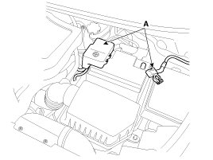
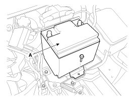
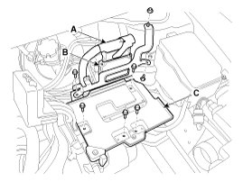
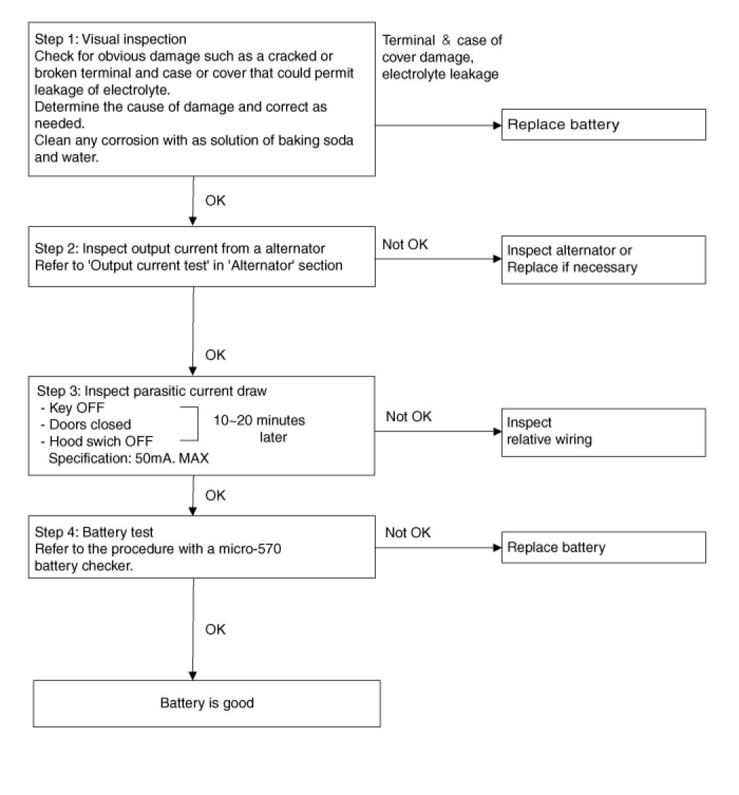
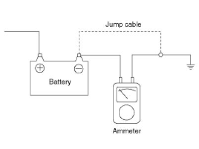
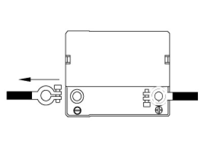

AGM Battery - With ISG (Idle Stop & Go) System
Adjustment
Battery charging
In general, vehicle battery charging system has three forms.
1. Constant current charge: The battery voltage gradually rises by charging with setting a constant current. If charging current and time are not managed correctly, the battery is over-charged, therefore charging should be stopped after confirming the completion of charging.
A. General charge: Charging the battery for a long time with low current
B. Quick charge: Charging the battery for a short time with high current
2. Constant voltage charge: The battery charge current is gradually reduced by charging with setting a constant voltage.
3. Constant current-Constant voltage charge: Charging with constant current and voltage to protect the battery damage
(1) Initial Stage: Charging with constant current
(2) Last Stage: Charging with constant voltage
CAUTION:
Refer to the instruction manual provided by the battery charger equipment manufacturers for detailed charging procedures and precautions.
[AGM battery charging]
AGM battery should be charged with constant voltage or constant current-constant voltage in order to minimize performance degradation due to the charging.
If charging the battery with constant current, overcharging may occur. It can cause damage to the internal battery and will give an adverse effect on battery life.
NOTE:
Do not charge with more than 14.8V or quick charge mode.
[Constant voltage charge conditions]
Charging voltage / time:14.7V [68°F ~ 86°F (20°C ~ 30°C)] / approximately 24 hours
The minimum charge voltage:14.4V [68°F ~ 86°F (20°C ~ 30°C)]
The maximum charging voltage:14.8V [68°F ~ 86°F (20°C ~ 30°C)]
CAUTION:
Battery temperature should be maintained at about 68°F ~ 86°F (20°C ~ 30°C) during charging of the battery.
CAUTION:
If the battery is charged directly at the battery terminals on vehicles with battery sensor, misinterpretations of battery condition and under certain circumstances also unwanted Check Control messages or fault memory entire can occur.
After recharging finished, let the battery stand for over 10 hours with normal temperature for battery stabilization.
Removal
1. Remove the battery.
(1) Disconnect the battery terminals (A).
Tightening torque
(+) terminal :
7.8 - 9.8 N.m (0.8 - 1.0 kgf.m, 5.8 - 7.2 lb-ft)
(-) terminal (without battery sensor) :
7.8 - 9.8N.m (0.8 - 1.0kgf.m, 5.8 - 7.2lb-ft)
(-) terminal (with battery sensor) :
4.0 - 6.0N.m (0.4 - 0.6kgf.m, 3.0 - 4.4lb-ft)

2. Remove the air duct and air cleaner assembly. .
3. Remove the battery insulation pad.
4. Remove the battery (A) after removing the mounting bracket.
Tightening torque :
8.8 - 13.7 N.m (0.9 - 1.4 kgf.m, 6.5 - 10.1 lb-ft)

5. Remove the ECM (B) and the battery tray (C) after disconnecting the ECM connector (A).
Tightening torque
ECM bracket bolts & nut :
9.8 - 11.8 N.m (1.0 - 1.2 kgf.m, 7.2 - 8.7 lb-ft)
Battery tray bolts :
8.8 - 13.7N.m (0.9 - 1.4kgf.m, 6.5 - 10.1lb-ft)

Installation
1. Install in the reverse order of removal.
CAUTION:
When installing the battery, fix the mounting bracket on the tray correctly.
CAUTION:
- ISG (Idle stop & go) system equipped vehicle always use the AGM battery only. If flooded battery has installed, this can potentially lead to engine electrical trouble or ISG system error.
- Replace same capacity of the AGM battery.
NOTE:
Ensure the AGM battery is placed correctly on the battery tray. In all cases, an AGM battery must be installed and the battery sensor calibrated for the ISG system to function. After the battery has been changed or disconnected, the battery sensor must be calibrated. After connecting the battery, start the engine at least once. Then park the car for at least 4 hours with the ignition off. After the 4 hours, the engine should be started two times. At this time the battery sensor will be calibrated.
WARNING:
Do not open the AGM battery.
The AGM battery must not be opened under any circumstances as the introduction of oxygen from the air will cause the battery to lose its chemical equilibrium and rendered non-operational.
Inspection
Battery Diagnostic Flow

Vehicle parasitic current inspection
1. Turn all the electric devices OFF, and then turn the ignition switch OFF.
2. Close all doors except the engine hood, and then lock all doors.
(1) Disconnect the hood switch connector.
(2) Close the trunk lid.
(3) Close the doors or remove the door switches.
3. Wait a few minutes until the vehicle's electrical systems go to sleep mode.
NOTE:
For an accurate measurement of a vehicle parasitic current, all electrical systems should go to sleep mode. (It takes at least one hour or at most one day.) However, an approximate vehicle parasitic current can be measured after 10 - 20 minutes.
4. Connect an ammeter in series between the battery (-) terminal and the ground cable, and then disconnect the clamp from the battery (-) terminal slowly.
CAUTION:
Be careful that the lead wires of an ammeter do not come off from the battery (-) terminal and the ground cable to prevent the battery from being reset. In case the battery is reset, connect the battery cable again, and then start the engine or turn the ignition switch ON for more than 10 sec. Repeat the procedure from No. 1.
To prevent the battery from being reset during the inspection,
1) Connect a jump cable between the battery (-) terminal and the ground cable.
2) Disconnect the ground cable from the battery (-) terminal.
3) Connect an ammeter between the battery (-) terminal and the ground cable.
4) After disconnecting the jump cable, read the current value of the ammeter.

5. Read the current value of the ammeter.
A. If the parasitic current is over the limit value, search for abnormal circuit by removing a fuse one by one and checking the parasitic current.
B. Reconnect the suspected parasitic current draw circuit fuse only and search for suspected unit by removing a component connected with the circuit one by one until the parasitic draw drops below limit value.
Limit value (after 10 - 20 min.) :Below 50mA
Cleaning
1. Make sure the ignition switch and all accessories are in the OFF position.
2. Disconnect the battery cables (negative first).
3. Remove the battery from the vehicle.
CAUTION:
Care should be taken in the event the battery case is cracked or leaking, to protect your skin from the electrolyte.
Heavy rubber gloves (not the household type) should be wore when removing the battery.

4. Inspect the battery tray for damage caused by the loss of electrolyte. If acid damage is present, it will be necessary to clean the area with a solution of clean warm water and baking soda. Scrub the area with a stiff brush and wipe off with a cloth moistened with baking soda and water.
5. Clean the top of the battery with the same solution as described above.
6. Inspect the battery case and cover for cracks. If cracks are present, the battery must be replaced.
7. Clean the battery posts with a suitable battery post tool.
8. Clean the inside surface of the terminal clamps with a suitable battery cleaning tool. Replace damaged or frayed cables and broken terminal clamps.
9. Install the battery in the vehicle.
10. Connect the cable terminals to the battery post, making sure tops of the terminals are flush with the tops of the posts.
11. Tighten the terminal nuts securely.
12. Coat all connections with light mineral grease after tightening.
CAUTION:
When batteries are being charged, an explosive gas forms beneath the cover of each cell. Do not smoke near batteries being charged or which have recently been charged. Do not break live circuit at the terminals of batteries being charged.
A spark will occur when the circuit is broken. Keep open flames away from battery.